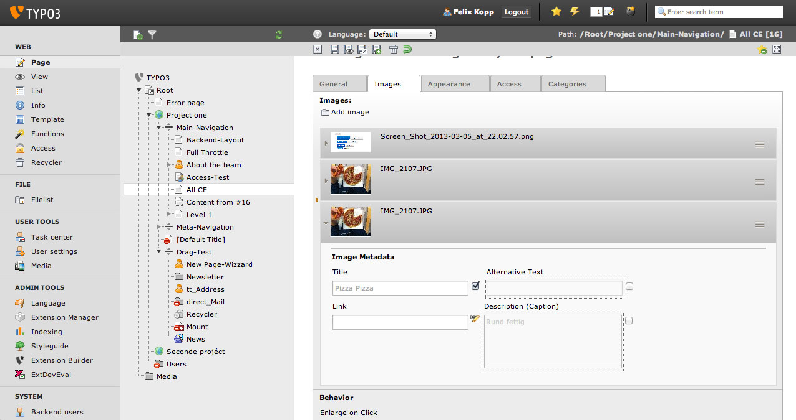
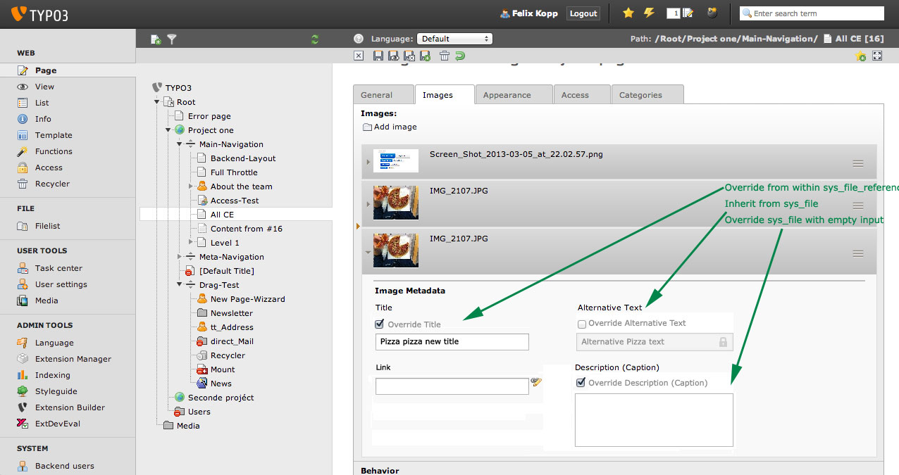

Bug #49685
Mask: sys_file / sys_file_reference override strategy
| Status: | Resolved | Start date: | 2013-07-05 | |
|---|---|---|---|---|
| Priority: | Should have | Due date: | ||
| Assigned To: | Felix Kopp | % Done: | 0% |
|
| Category: | Interface | |||
| Target version: | TYPO3 6.2 LTS | |||
| Tags: |
Description
Discussed at T3DD during UX FAL workshop there is a need to improve the form for overriding sys_file metadata from within sys_file_reference.
Problems in all day work:
Currently the checkbox to override sys_file values with sys_file_reference values is checked by default. The checkbox should be unchecked by default.
There is no label included to describe the action performed by the checkbox. A label should be added.
Checkbox functionality: Selecting the checkbox should perform the action override and not inherit.
Background: Adding files into content element can inherit sys_file metadata by default and should inherit by default.
When working with sys_file_references editors want to be able to accomplish the actions:
- Inherit data from sys_file
- Overwrite data from sys_file with content of sys_file_reference
- overwrite data from sys_file with empty string
Editor's decissions in chronological order:
- Do I want to override sys_file default values? Yes/No
- What are the new values to override sys_file with? text Input (even empty)
Case inherit: When override is unchecked (inherit) no input field should be visible but the inherited text should be displayed.
Case override: When override is checked the input field must be displayed.


{kind=link}
{kind=link}
Related issues
History
#1 Updated by Lars Zimmermann about 2 years ago
+1
#2 Updated by Jens Hoffmann about 2 years ago
+1
#3 Updated by Jens Hoffmann about 2 years ago
- Category set to Interface
- Status changed from New to Accepted
- Assigned To set to Felix Kopp
- Target version set to TYPO3 6.2 LTS
#4 Updated by Gerrit Code Review about 2 years ago
Patch set 1 for branch master has been pushed to the review server.
It is available at https://review.typo3.org/21931
#5 Updated by Gerrit Code Review about 2 years ago
Patch set 2 for branch master has been pushed to the review server.
It is available at https://review.typo3.org/21931
#6 Updated by Gerrit Code Review about 2 years ago
Patch set 3 for branch master has been pushed to the review server.
It is available at https://review.typo3.org/21931
#7 Updated by Gerrit Code Review about 2 years ago
Patch set 4 for branch master has been pushed to the review server.
It is available at https://review.typo3.org/21931
#8 Updated by Felix Kopp about 2 years ago
- Status changed from Accepted to Resolved
Visual decision has been taken. Is resolved.
Code is pending in gerrit.
#9 Updated by Gerrit Code Review almost 2 years ago
Patch set 5 for branch master has been pushed to the review server.
It is available at https://review.typo3.org/21931
#10 Updated by Jens Hoffmann almost 2 years ago
- Status changed from Resolved to Needs Feedback
After "re-seeing" this, I would like to see the overwritten content, instead of just the "checkbox".
I mean "What is the title?" that will be replaced?
[x] Override "This is the parent title"?
Would that be possible?
Greez Jens
#11 Updated by Gerrit Code Review almost 2 years ago
Patch set 6 for branch master has been pushed to the review server.
It is available at https://review.typo3.org/21931
#12 Updated by Gerrit Code Review almost 2 years ago
Patch set 7 for branch master has been pushed to the review server.
It is available at https://review.typo3.org/21931
#13 Updated by Jens Hoffmann almost 2 years ago
This is done?
#14 Updated by Gerrit Code Review almost 2 years ago
Patch set 8 for branch master has been pushed to the review server.
It is available at https://review.typo3.org/21931
#15 Updated by Gerrit Code Review almost 2 years ago
Patch set 1 for branch master_new has been pushed to the review server.
It is available at https://review.typo3.org/23420
#16 Updated by Gerrit Code Review almost 2 years ago
Patch set 2 for branch master_new has been pushed to the review server.
It is available at https://review.typo3.org/23420
#17 Updated by Andreas Wolf almost 2 years ago
Documentation for the new mode "useOrOverridePlaceholder" is still missing.
#18 Updated by Ernesto Baschny almost 2 years ago
And please do not use UX-issue numbers to resolve Core issues! Open up a Core issue for working on the solution in the Core after it was approved in the UX tracker.
#19 Updated by Jens Hoffmann almost 2 years ago
@Ernesto: Can I close this issue here, than?
#20 Updated by Gerrit Code Review almost 2 years ago
Patch set 1 for branch master has been pushed to the review server.
It is available at https://review.typo3.org/23526
#21 Updated by Gerrit Code Review almost 2 years ago
Patch set 2 for branch master has been pushed to the review server.
It is available at https://review.typo3.org/23526
#22 Updated by Oliver Hader almost 2 years ago
- Status changed from Needs Feedback to Resolved